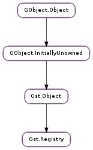

| static | fork_is_enabled() |
| static | fork_set_enabled(enabled) |
| static | get() |
| add_feature(feature) | |
| add_plugin(plugin) | |
| check_feature_version(feature_name, min_major, min_minor, min_micro) | |
| feature_filter(filter, first, *user_data) | |
| find_feature(name, type) | |
| find_plugin(name) | |
| get_feature_list(type) | |
| get_feature_list_by_plugin(name) | |
| get_feature_list_cookie() | |
| get_plugin_list() | |
| lookup(filename) | |
| lookup_feature(name) | |
| plugin_filter(filter, first, *user_data) | |
| remove_feature(feature) | |
| remove_plugin(plugin) | |
| scan_path(path) |
None
| Name | Parameters | Return | Description |
|---|---|---|---|
| feature-added | Gst.PluginFeature | Signals that a feature has been added to the registry (possibly replacing a previously-added one by the same name) | |
| plugin-added | Gst.Plugin | Signals that a plugin has been added to the registry (possibly replacing a previously-added one by the same name) |
| Name | Type | Access |
|---|---|---|
| object | Gst.Object | r |
Bases: Gst.Object
One registry holds the metadata of a set of plugins.
Design:
The Gst.Registry object is a list of plugins and some functions for dealing with them. Each Gst.Plugin is matched 1-1 with a file on disk, and may or may not be loaded at a given time.
The primary source, at all times, of plugin information is each plugin file itself. Thus, if an application wants information about a particular plugin, or wants to search for a feature that satisfies given criteria, the primary means of doing so is to load every plugin and look at the resulting information that is gathered in the default registry. Clearly, this is a time consuming process, so we cache information in the registry file. The format and location of the cache file is internal to gstreamer.
On startup, plugins are searched for in the plugin search path. The following locations are checked in this order:
The registry cache file is loaded from ~/.gstreamer-$GST_API_VERSION/registry-$ARCH.bin or the file listed in the GST_REGISTRY env var. One reason to change the registry location is for testing.
For each plugin that is found in the plugin search path, there could be 3 possibilities for cached information:
In the first two cases, the plugin is loaded and the cache updated. In addition to these cases, the cache may have entries for plugins that are not relevant to the current process. These are marked as not available to the current process. If the cache is updated for whatever reason, it is marked dirty.
A dirty cache is written out at the end of initialization. Each entry is checked to make sure the information is minimally valid. If not, the entry is simply dropped.
Implementation notes:
The “cache” and “registry” are different concepts and can represent different sets of plugins. For various reasons, at init time, the cache is stored in the default registry, and plugins not relevant to the current process are marked with the Gst.PluginFlags.CACHED bit. These plugins are removed at the end of initialization.
Last reviewed on 2012-03-29 (0.11.3)
| Returns: | True if GStreamer will use the child helper process when rebuilding the registry. |
|---|---|
| Return type: | bool |
By default GStreamer will perform scanning and rebuilding of the registry file using a helper child process.
Applications might want to disable this behaviour with the Gst.Registry.fork_set_enabled () function, in which case new plugins are scanned (and loaded) into the application process.
| Parameters: | enabled (bool) – whether rebuilding the registry can use a temporary child helper process. |
|---|
Applications might want to disable/enable spawning of a child helper process when rebuilding the registry. See Gst.Registry.fork_is_enabled () for more information.
| Returns: | the Gst.Registry. |
|---|---|
| Return type: | Gst.Registry |
Retrieves the singleton plugin registry. The caller does not own a reference on the registry, as it is alive as long as GStreamer is initialized.
| Parameters: | feature (Gst.PluginFeature) – the feature to add |
|---|---|
| Returns: | True on success. MT safe. |
| Return type: | bool |
Add the feature to the registry. The feature-added signal will be emitted. This function sinks feature.
| Parameters: | plugin (Gst.Plugin) – the plugin to add |
|---|---|
| Returns: | True on success. MT safe. |
| Return type: | bool |
Add the plugin to the registry. The plugin-added signal will be emitted. This function will sink plugin.
| Parameters: | |
|---|---|
| Returns: | True if the feature could be found and the version is the same as the required version or newer, and False otherwise. |
| Return type: |
Checks whether a plugin feature by the given name exists in registry and whether its version is at least the version required.
| Parameters: |
|
|---|---|
| Returns: | a GLib.List of Gst.PluginFeature. Use Gst.PluginFeature.list_free () after usage. MT safe. |
| Return type: |
Runs a filter against all features of the plugins in the registry and returns a GLib.List with the results. If the first flag is set, only the first match is returned (as a list with a single object).
| Parameters: |
|
|---|---|
| Returns: | the pluginfeature with the given name and type or None if the plugin was not found. Gst.Object.unref () after usage. MT safe. |
| Return type: |
Find the pluginfeature with the given name and type in the registry.
| Parameters: | name (str) – the plugin name to find |
|---|---|
| Returns: | the plugin with the given name or None if the plugin was not found. Gst.Object.unref () after usage. MT safe. |
| Return type: | Gst.Plugin |
Find the plugin with the given name in the registry. The plugin will be reffed; caller is responsible for unreffing.
| Parameters: | type (GObject.GType) – a GObject.Type. |
|---|---|
| Returns: | a GLib.List of Gst.PluginFeature of type. Use Gst.PluginFeature.list_free () after use MT safe. |
| Return type: | [Gst.PluginFeature] |
Retrieves a GLib.List of Gst.PluginFeature of type.
| Parameters: | name (str) – a plugin name. |
|---|---|
| Returns: | a GLib.List of Gst.PluginFeature. Use Gst.PluginFeature.list_free () after usage. |
| Return type: | [Gst.PluginFeature] |
Retrieves a GLib.List of features of the plugin with name name.
| Returns: | the feature list cookie. |
|---|---|
| Return type: | int |
Returns the registrys feature list cookie. This changes every time a feature is added or removed from the registry.
| Returns: | a GLib.List of Gst.Plugin. Use Gst.Plugin.list_free () after usage. MT safe. |
|---|---|
| Return type: | [Gst.Plugin] |
Get a copy of all plugins registered in the given registry. The refcount of each element in the list in incremented.
| Parameters: | filename (str) – the name of the file to look up |
|---|---|
| Returns: | the Gst.Plugin if found, or None if not. Gst.Object.unref () after usage. |
| Return type: | Gst.Plugin |
Look up a plugin in the given registry with the given filename. If found, plugin is reffed.
| Parameters: | name (str) – a Gst.PluginFeature name |
|---|---|
| Returns: | a Gst.PluginFeature with its refcount incremented, use Gst.Object.unref () after usage. MT safe. |
| Return type: | Gst.PluginFeature |
Find a Gst.PluginFeature with name in registry.
| Parameters: |
|
|---|---|
| Returns: | a GLib.List of Gst.Plugin. Use Gst.Plugin.list_free () after usage. MT safe. |
| Return type: |
Runs a filter against all plugins in the registry and returns a GLib.List with the results. If the first flag is set, only the first match is returned (as a list with a single object). Every plugin is reffed; use Gst.Plugin.list_free () after use, which will unref again.
| Parameters: | feature (Gst.PluginFeature) – the feature to remove |
|---|
Remove the feature from the registry.
MT safe.
| Parameters: | plugin (Gst.Plugin) – the plugin to remove |
|---|
Remove the plugin from the registry.
MT safe.